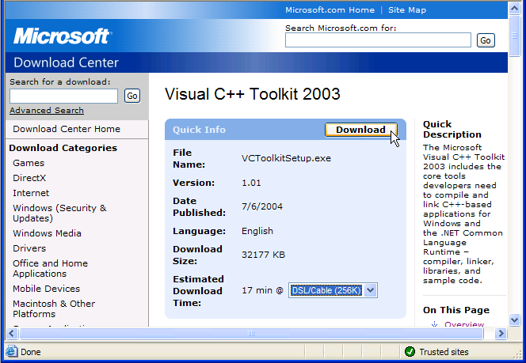
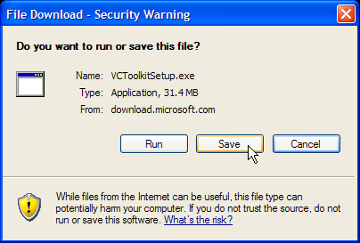
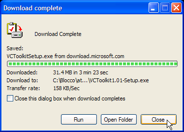
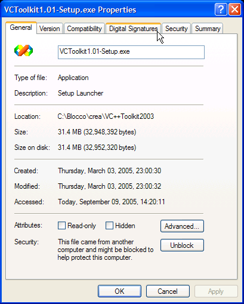
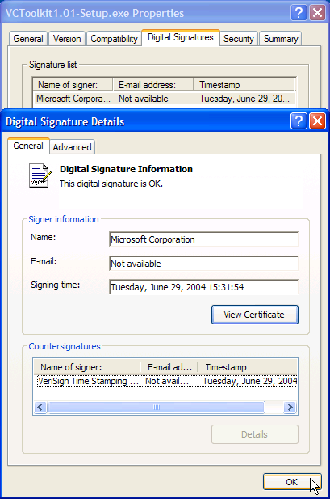

Q050901
ODMA
FAQtip
ActiveODMA C/C++
Compiler
Microsoft® Visual
C++®
Toolkit 2003 1.01
0.26 2013-08-22 -12:48 -0700
|
|
Q050901
ODMA
FAQtip |
0.26 2013-08-22 -12:48 -0700 |
- Latest version: The latest version of this FAQtip is available on the Internet at
<http://ODMA.info/faq/2005/09/Q050901b.htm>.- This version: 0.26 <http://ODMA.info/faq/2005/09/Q050901c.htm>. Consult that page for the latest status and for the most-recent electronic copies of the material.
Starting March 3, 2005, the Microsoft Visual C++ Toolkit 2003 is selected for construction of all C/C++-based ActiveODMA deliverables. This same software is required for use in verifying the construction of any stable ActiveODMA release. It is useful for repeating ActiveODMA experiments, tests, and for making similar software using C/C++ and the Microsoft Windows platform. It can also be used, as setup here, for use in self-study, practice, and general familiarization with C/C++ software development.
This document describes how to obtain the software and verify that the correct version has been obtained. Following verification of the download, setup can be performed. The recommended setup procedure is documented in FAQtip Q050902: C/C++ Compiler Setup.
1. Why This Compiler?
2. Prerequisites
2.1 Review of prerequisites
2.2 Alternatives
3. Downloading the Toolkit
3.1 Prepare for downloading
3.2 Initiate the download
3.3 Save the setup file
4. Verifying the Download
4.1 Find the download on your computer
4.2 Check file properties
4.3 Verify digital signature
5. Preserving the Download
6. References
- see also:
- Q050902: C/C++ Compiler Setup
Q050903: C/C++ Programming Resources
The Microsoft Visual C++ Toolkit 2003 (Microsoft 2004) satisfies the basic requirements for a compiler to be used in building C/C++ ActiveODMA deliverables and verifying their construction. It is also a valuable tool for familiarization with compiler operation and for learning C/C++ programming.
- 1.1 It is the latest version of compiler technology used in all earlier ODMA software distributions. It provides direct support for the Microsoft Component Object Model (COM) as it is relied upon for ODMA integration.
- 1.2 It operates on the platform for which ODMref 1.0 and ActiveODMA components are intended: Windows 2000 and later, targeting the Microsoft Windows XP SP2 operating-system release.
- 1.3 The toolkit is available without charge for unrestricted use. The prohibitions concerning the redistributables (there are none) and samples are easily honored.
- 1.4 Substantial documentation and usage information is available on-line, with support from peer-supported newsgroups and online web logs (MSDN 2005).
- 1.5 Additional libraries required for development of Windows-specific applications are available for free download and use in developing for the full range of Microsoft Windows platforms (Microsoft 2005).
- 1.6 Although the compiler will be used from the command line in console sessions, the setup and usage seems relatively easy to describe and document for users unfamiliar with console-mode operation. Inclusion of easy-to-customize batch files simplifies confirmation exercises and the duplication of tests.
2.1 Review of Prerequisites
Please review all of these prerequisites before downloading the toolkit. If you are uncertain about any of the prerequisites, work with a knowledgeable buddy to determine an approach that works for you. Questions about the setup and any difficulties with it can also be sent to the ActiveODMA Discussion List.
2.1.1 You must obtain the toolkit directly from Microsoft (section 3). This software is not redistributable by others. It is important to make sure that you have an authentic version obtained directly from Microsoft Corporation. It is also important to read the licensing conditions, confirm availability of the software, and understand the support resources that are available to you.
2.1.2 Microsoft customer support and developer support is not provided for Microsoft Visual C++ Toolkit 2003. There is peer support for the toolkit on discussion groups and elsewhere. The MSDN site provides further information about available resources.
2.1.3 You must have a Microsoft Windows PC with Intel Processor and a 32-bit operating system (Windows 2000 Professional or later, with Windows XP Pro SP2 preferred). For ActiveODMA usage and for testing C/C++ software, it is desirable to use an NTFS-format file system for additional safety and security.
2.1.4 You'll need disk and backup capacity of 100MB or more to install and use the toolkit. The toolkit setup file is 31.4 MB and the installed toolkit requires 30 MB on disk (not counting the .NET Framework which may be already installed). The space for your own C/C++ source programs and compiled results is additional.
2.1.5 If possible, backup the downloaded setup file to CD-ROM or other removable storage (section 5). This is important if you need to reinstall the toolkit at a future time when the download is unavailable. You can also use less space by running the setup from CD-ROM. (To use the toolkit for ActiveODMA development, an additional 500MB will be required for initial installation of the Microsoft Platform SDK.)
2.1.6 A limited account is sufficient and strongly-recommended for using the compiler and running tests. This account together with the use of an NTFS file system protects other software and data on your computer from misadventures while you are running untested programs and early releases of ActiveODMA.
2.1.7 You must be able to assume administrative privileges during installation. There must be a separate administrator account. It will be used to elevate privileges of the limited account just long enough to install the toolkit. Then the limited account privileges can be restored.
2.1.8 You will be using the Windows Command Prompt, batch files, and console/command-line utilities. These are already part of Microsoft Windows. Additional utilities will be obtained from other sources. Most programs and their tests will involve creation of console programs. There will be some batch files that you will need to modify and run. If you are not already conversant with this style of operation, you must be prepared to practice and learn as part of working with console applications and the command-line compiler. The setup procedures for the toolkit provide an initial introduction into this style of operation. Successfully completing the setup is a good check for your readiness to continue.
2.1.9 You will need to become comfortable creating and organizing directories of files using the Windows Explorer and the command-line interfaces. The Windows desktop "Start | Help and Support" (or equivalent ) menu item provides information about Windows Basics, including an introduction to working with files and folders using the Windows Explorer.
2.2.1 The compiler that is part of Microsoft Visual Studio .NET 2003 (build 13.10.3077) is the same one that is included in the Microsoft Visual C++ Toolkit 2003. All of the procedures that are introduced for using the toolkit can be adapted to use the compiler, linker, and libraries in their locations under Visual Studio. There is no interference between this use and the continuing separate use of Visual Studio facilities (but see 2.2.4).
2.2.2 You can adapt the setup confirmation procedure for the toolkit to confirm that you are able to use the Visual Studio command-line compiler exactly as if you were using the toolkit compiler. Carrying out that exercise will also confirm whether or not you do have the same compiler release as the toolkit.
2.2.3 To verify ActiveODMA C/C++ components, you will later need to customize the ODMdev batch files and the dependency limitation procedures used for ActiveODMA development.
2.2.4 There are additional precautions required to ensure that ActiveODMA distributions can be verified using the resources of Microsoft Visual Studio. If there is an update or upgrade to Visual Studio, it may be necessary to also install the toolkit for separate command-line usage in order to maintain ActiveODMA verification capability. Using the toolkit setup described here, this duplication will avoid interference between Visual Studio, the Toolkit, and possibly-separate/multiple versions of the Windows Platform SDK.
3.1.1 Read through this entire Section 3 before initiating the download.
3.1.2 Have sufficient space available on your computer for the full 32MB download.
3.1.3 Decide where you want to store the downloaded setup file. Your Windows desktop and the "My Documents" locations can be used if you make yourself administrator for the setup. On Windows XP, the folder reached via "Start|My Computer|Shared Documents" (typically at "C:\Documents and Settings\All Users\Documents") is usable.
To have the option to preserve the setup file (section 5), create a separate place from which to backup and restore downloads like this one (e.g., make a Downloads folder under Shared Documents or directly on your hard drive). In the illustrative download (section 3.3) the file is stored in a backed-up directory of all downloaded installation files. This can be used to restore files for reinstallation and to transfer the software to a new computer if that becomes necessary.3.1.4 Be in the limited account for conducting the download over the Internet.
3.1.5 By opening a new page in your browser (Ctrl+N in Internet Explorer) you can keep this page open for viewing while navigating through the download process in a different browser window.
3.2.1 In your browser, visit the Visual Toolkit 2003 web page (Microsoft 2004). Review that page if you have not visited it before.
3.2.2 Click the "Download the Visual C++ Toolkit 2003" link just below the brief description of the toolkit at the top of the page.
3.2.3 You will be taken to the Microsoft Download Center for the actual download. Verify the download time that you can expect. Verify that the details of version, date, and size match those in the screenshot (fig. 3-1). If there is a discrepancy, please report this to ActiveODMA Discussion list and request further instructions.

Fig. 3-1. Visual C++ Toolkit 2003 1.01 page at the Microsoft Download center (2005-09-09)3.2.4 Click the "Download" button. This may take you directly to the download operation. You may be invited to register first. Whether you choose to register or not, you will reach a point where the download operation starts:

Fig. 3-2. File-Download Option Screen3.2.5 Click "Save." Do not specify that the file should be run. It is important to verify the download first. Also, attempting to open the file and install the toolkit under a limited account will fail.
3.3.1 A "Save As ..." screen will give you the option of specifying where you want to save the file and what you want to call it. Navigate to the directory where you want to save the file. It is recommended that you modify the name to have a reminder of the exact version of the toolkit this is, as illustrated below. This will also prevent it being over-written if you download a newer version later on.
3.3.2 Once you click "Save" on the "Save As ..." screen, download proceeds:

Fig. 3-3. Download Completion3.3.3 If the download doesn't start when you click "Save" or it times-out, simply back up your browser to the "Download" button and start again.
After the download is complete, you can verify that the appropriate download has been completely received by examining the received file.
Open a window for the directory where you downloaded the toolkit setup file. Notice the directory entry for the file. The size and descriptive material is consistent with the information on the download page (fig. 3-1). The dates are the date of download:
Fig. 4-1. File Directory Entry for the Download (typical: Windows XP SP2)
The properties of the file can be checked by selecting the file and then clicking File | Properties or by right-clicking on the file name and selecting the Properties option. Size information should agree with that shown, although other details may vary for your download (fig. 4-2a). Additional information about the toolkit setup launcher is available on the Version tab.


Fig. 4-2. File Properties (typical: Microsoft Windows XP SP2 configuration)
left (a): Typical Properties display for the toolkit download setup file. The exact size should match.
right (b): Digital Signature details for the setup file.
4.3.1 The Digital Signatures tab identifies a single signature. Selecting that entry and clicking on the "Details" button should confirm verification of the signature, when it was applied, and the signing authority (fig. 4-2b). There is additional information on the certificate.
4.3.2 Successful verification of the signature, in this case, is basic confirmation that this is a Microsoft software release, something that we have every reason to expect since the file was obtained from the Microsoft Download Center.
4.3.3 Perhaps more useful, in this case, is the evidence that verification of the digital signature and matching the exact size of the file provides for assurance that the file is accurately downloaded and has not been corrupted or altered in any way since the signature was applied.
5.1 Once you are satisfied with the download, it is valuable to back it up (section 2.1.5). The easiest way to restore the toolkit if it is damaged or you are moving to another computer is by performing the setup again using a backup copy. This restores your configuration to a known, predictable condition.
5.2 If you already perform periodic backups, that procedure can be used. For the system on which this download was demonstrated, the toolkit setup file is backed up on another computer (using a small household network). The file is also stored on a CD-ROM along with other downloads, in case neither computer copy is usable. In all cases it is possible to recover the setup file by itself, without having to perform recovery of any other files.
5.3 Archiving the setup file also preserves the C/C++ Compiler in case it is needed later to recreate or trouble-shoot a package that has long since been distributed and possibly obsoleted. Even though this toolkit version might no longer be used, and it is removed from your computer, it can be important to always have a way to restore it to use later (so long as there are computers available that can still operate the software, of course).
Next Steps: Setting up the Toolkit for Usage
- Microsoft (2004).
- Microsoft® Visual C++® Toolkit 2003, version 1.01.0000, June 29, 2004. Available for download at <http://msdn.microsoft.com/visualc/vctoolkit2003/> (accessed 2005 March 3).
- Microsoft (2005).
- Windows Server 2003 SP1 Platform SDK. April 2005 edition. Downloadable via Web Install, via Full Download, and via CD-ROM (U.S. only, for nominal shipping cost). Available via <http://www.microsoft.com/msdownload/platformsdk/sdkupdate/> (accessed 2005 September 6).
- MSDN (2005).
- Microsoft® Visual C++® Developer Center. Web site. Microsoft Software Developer Network, Microsoft Corporation, <http://msdn.microsoft.com/visualc/> (accessed 2005 September 06).

|
You are
navigating the ODMA Interoperability Exchange. |
created 2005-09-07-22:14 -0700 (pdt) by
orcmid |